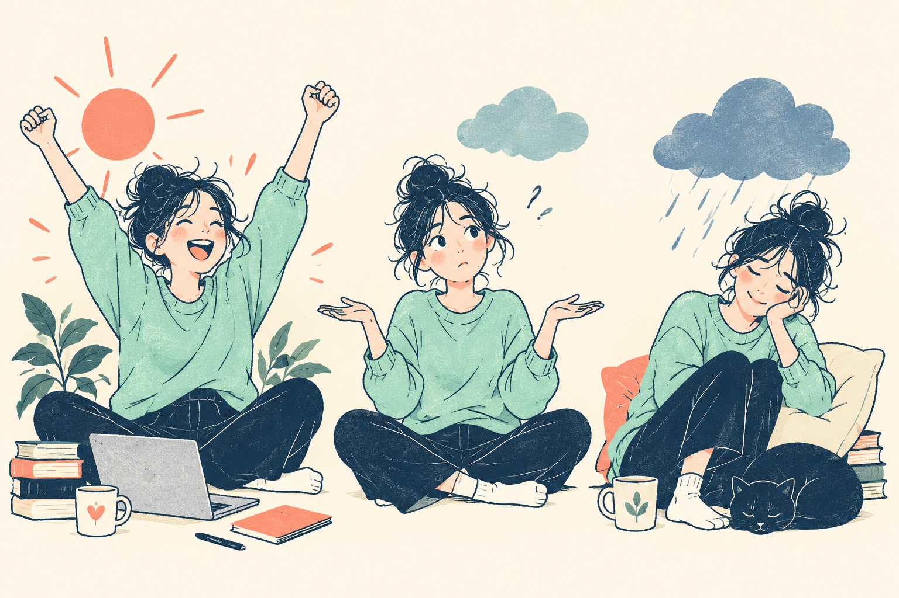
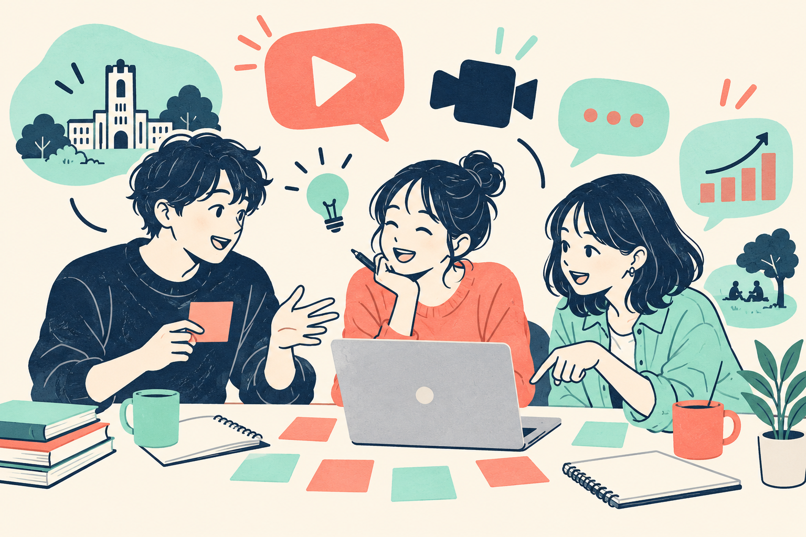
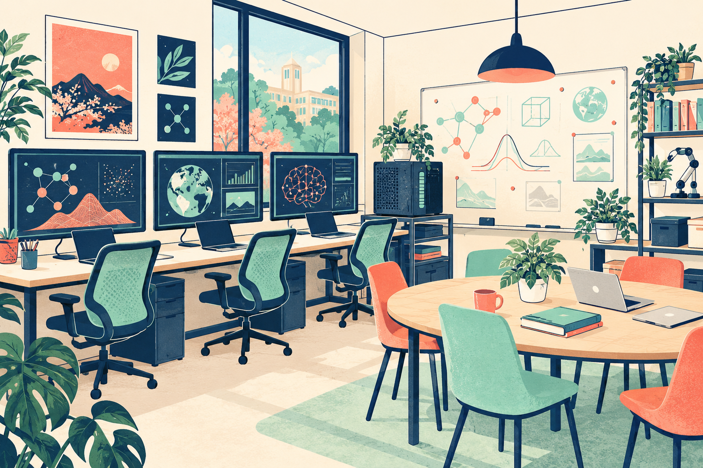
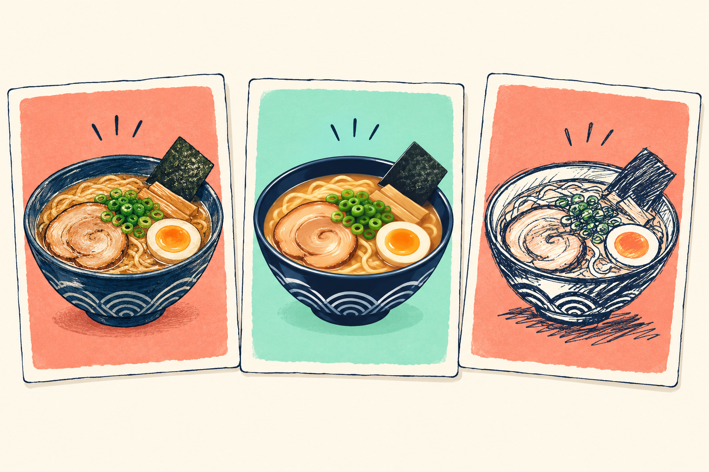
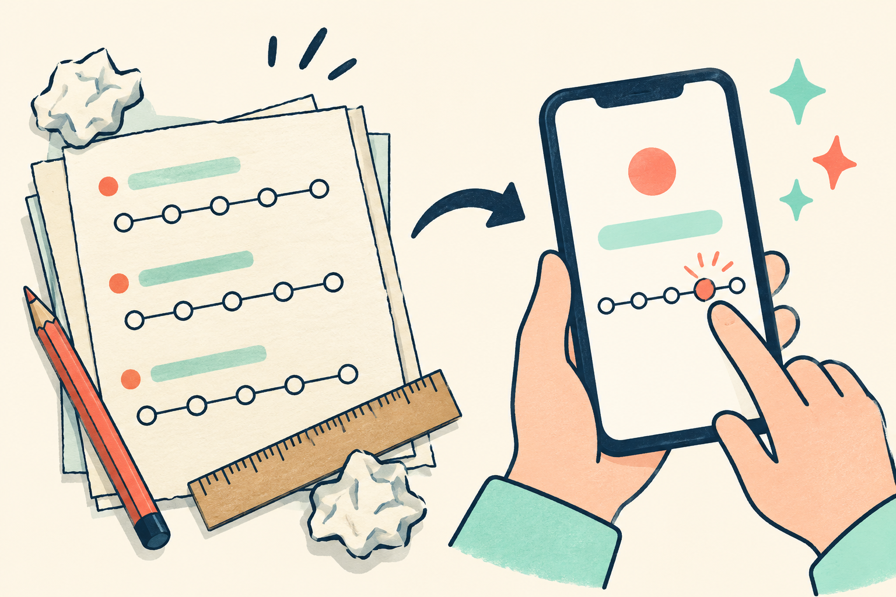

HUMANWARE LABORATORY基本ルート / 僕の紹介
人間って、
めんどくさい。
だから面白い。
Humanware Laboratory
白濵 成希｜下関市立大学 データサイエンス学部
2026年10月1日・放課後の研究室紹介

紹介メモ／先生の経験・考え
HUMANWARE LABORATORY基本ルート / 僕の紹介
気になる話があれば、そこへ寄り道。
今日の話題メニュー
HUMANWARE LABORATORY基本ルート / 僕の紹介
人間の感情・主観・曖昧さ
LLMの「感性っぽい」出力
アニメもよく見ます。
お酒も好きです。
その「好き」、人によって違うのが面白い。
紹介メモ＋本人の補足（アニメ・お酒）
HUMANWARE LABORATORY基本ルート / 研究の原点
機械をつくる
仕組みをつくる
人間に目を向ける
「人間を対象とする工学が必要になる」
恩師の言葉が、研究者になるきっかけでした。
紹介メモ／先生の経験・考え
HUMANWARE LABORATORY基本ルート / 研究の原点
同じ人。
同じもの。
でも、同じ気分？
主観・曖昧さ・文脈。
人間は、条件で感じ方が変わる。
紹介メモ／先生の経験・考え
HUMANWARE LABORATORY基本ルート / VASと学生の問い
「やや好き」と「好き」の間にも、言いたいことがある。
「好き」の強さ
VAS：Visual Analog Scale。線の上で、感じ方の強さを表す。
紹介メモ／先生の経験・考え
HUMANWARE LABORATORY基本ルート / VASと学生の問い
同じ曲でも、
歌う声が違うと？
手描きと生成AIで、
印象は変わる？
文章・画像・動画から、
「これ気になる」を選ぶ。
VAS Padは道具。研究の主役は、問い。
紹介メモ／学生のテーマ紹介。結果の提示ではない
HUMANWARE LABORATORY基本ルート / VASと学生の問い
この画像、どのくらい好き？
右は説明用の模式図。通信がなくても、この図で話を続けられます。
紹介メモ＋VAS PadのローカルREADME／図は模式図
HUMANWARE LABORATORY基本ルート / LLM研究
同じ作品。
いろんなAI。
どんな評価になる？
日本文学を入力し、
感情に関する評価を出力させる。
紹介メモ／先生の経験・考え
HUMANWARE LABORATORY基本ルート / LLM研究
どのLLMに読ませる？
どんな立場で評価させる？
同じ条件で何度も試したら？
「モデルが違う」だけでは、まだ終わらない。
紹介メモ＋OpenRouter公式Quickstart（確認日：2026-10-01）
HUMANWARE LABORATORY基本ルート / LLM研究
EQ-Fuzzy
LLMの感情評価に表れる曖昧さを、数値で調べたい。
実験環境を整備。
条件を変えて出力を比較する。
多様な振る舞いを測る
ベンチマークへ。
ファジィエントロピーを使う研究。科研費・基盤C採択は先生の紹介メモによる。
紹介メモ／先生の経験・考え
HUMANWARE LABORATORY基本ルート / 広報研究の構想
新しい研究構想
受験生と保護者に、
何を、どこで？
根拠を集める → 仮説を立てる
発信する → 結果を見て改善する

紹介メモ／構想段階
HUMANWARE LABORATORY基本ルート / 広報研究の構想
構想段階・条件は相談
仮説・実践・検証を積み上げ、
卒業論文として報告する。
HarborGate AI Auditで
受ける予定の案件とつながる構想。
「アルバイトの平均以上は約束したい」
先生の意向。所定の業務プロセスを達成した場合の報酬は、条件・金額とも相談。
紹介メモ／先生の構想・報酬に関する意向
HUMANWARE LABORATORY基本ルート / 研究室の暮らし
問いのセンス
人とのコミュニケーション
実験を組む
AI・コード・GitHub
動く・届ける
反応を見て改善する
このスキルを「伸ばしたい」から選ぶのもあり。
進学も、仕事につながる経験も。どこを深めたいか相談しよう。
紹介メモ／先生の経験・考え
HUMANWARE LABORATORY基本ルート / 研究室の暮らし
チャット・メールで
進捗を伝える
週1〜2回の
1 on 1を想定
テーマに応じて
GitHubなどを使う
動かしながら、
一緒に決めていこう。
運営の想定です。相性やテーマに合わせて調整します。
紹介メモ／研究室運営の想定
HUMANWARE LABORATORY基本ルート / 研究室の暮らし
導入予定・空間は構想
USB-C一本でつなぐ4Kモニター。
ローカルAI用のDGX Spark。
学部の計算サーバーも活用。
無線LAN・NASも整備。
手元のノートPCを、
研究しやすい環境へ。

紹介メモ／導入予定と既存環境を区別。絵は構想イメージ
HUMANWARE LABORATORY基本ルート / 締めと雑談
それ、
研究になるかも。
面白い問いを、一緒に育てたい。
紹介メモ／先生の経験・考え
HUMANWARE LABORATORY寄り道 / 僕の紹介
同じ作品なのに、
刺さる場面が違う。
僕もアニメをよく見ます。
作品の話から、人の感じ方の話へ。
本人の補足／アニメ好き。感想の吹き出しは会話例
HUMANWARE LABORATORY寄り道 / 僕の紹介
同じ味でも、
「好き」は違う。
言葉にするのも、難しい。
僕の趣味の話。君たちの「好き」も聞きたい。
作品でも、食べ物でも、音楽でも。
本人の補足／お酒好き。研究参加や飲酒への勧誘ではない
HUMANWARE LABORATORY寄り道 / 僕の紹介
何だろう？
どう記録する？
どう振る舞う？
気になることが、
次の研究を連れてくる。
紹介メモ／先生の経験・考え
HUMANWARE LABORATORY寄り道 / 研究の原点
「僕には」
を、ちゃんと扱う。
卒業論文・修士論文・博士論文で、
主観性を扱ってきました。
人による違いは、調べる入口にもなる。
紹介メモ／先生の経験・考え
HUMANWARE LABORATORY寄り道 / 研究の原点
きっぱり二択にできない。
その曖昧さを、扱いたい。
……でも、この部分は好き
その日の気分で変わる
……でも、全部ではない
ファジィ理論に興味を持った入口。会話は説明用の例。
紹介メモ／先生の経験・考え
HUMANWARE LABORATORY寄り道 / 研究の原点
「大丈夫」
「大丈夫」
同じ言葉。
でも、何を伝えている？
説明用の会話例。文脈も、評価の条件になる。
紹介メモの文脈依存性を説明する会話例
HUMANWARE LABORATORY寄り道 / 研究の原点
HOT-2000
携帯型のNIRS装置
近赤外光を使って、
血流に関わる変化を捉える。
感情そのものを
直接読む装置ではない。
実験計画・承認・協力者への説明と同意も、大切にしてきました。
使用経験：紹介メモ／装置説明：NeU公式（2026-10-01確認）
HUMANWARE LABORATORY寄り道 / VASと学生の問い
学生が立てた問い
どんな印象を受ける？
どんな印象を受ける？
声の違いを、
印象の違いとして調べる。
同じ楽曲でも、編曲・音量・歌い方などの条件を考える。
紹介メモ／学生のテーマ。結果は未提示
HUMANWARE LABORATORY寄り道 / VASと学生の問い
おいしそう。
でも、何か違う？
僕は生成AIの料理画像に、
抵抗を感じることがあります。
これは僕の感想。
みんなが同じとは限らない。

全てAI生成の概念イラスト。実験刺激・評価結果ではありません。
紹介メモ／先生個人の感想。画像は説明用にAI生成
HUMANWARE LABORATORY寄り道 / VASと学生の問い
研究アイデア
変わるのは画像？
それとも、受け取り方？
説明を与える条件をどう設計するか。ここでは結果を決めつけない。
今回の研究アイデア／実施済み実験ではない
HUMANWARE LABORATORY寄り道 / VASと学生の問い
一人ずつ。
一問ずつ。
定規で測る。
その手間を、ウェブへ。
VAS Padで回答を記録し、
CSVで取り出して分析へ。

紹介メモ＋VAS PadローカルREADME／イラストは概念図
HUMANWARE LABORATORY寄り道 / VASと学生の問い
実験を考える例
歌声？
画像の見せ方？
音量？長さ？
表示する大きさ？
好き？自然？
親しみやすい？
「違った！」の、その理由まで考えたい。
紹介メモを基にした実験設計の例
HUMANWARE LABORATORY寄り道 / VASと学生の問い
期待どおりでも、
違っていても。
問いを丁寧に確かめて、
何が分かり、何がまだ分からないかを残す。
研究は、期待した答えを出す競技ではない。
紹介メモ／先生の研究観。p値を仮説の確率とは扱わない
HUMANWARE LABORATORY寄り道 / LLM研究
研究アイデア
同じ文章でも、
与える立場で
評価はどう変わる？
指定した立場の出力は、実際の人間の評価とは区別する。
紹介メモのペルソナ条件を基にした研究アイデア
HUMANWARE LABORATORY寄り道 / LLM研究
調べるのは、
出てきた評価。
指示に対して、
どんな回答を出したか。
AIが内面で
感情を感じたかどうか。
紹介メモ／研究対象の範囲を明確化
HUMANWARE LABORATORY寄り道 / LLM研究
モデル・指示・
設定を記録
同じ条件で
評価を集める
揃うところ？
揺れるところ？
一回の「へえ」で、
終わらせたくない。
紹介メモ／先生の経験・考え
HUMANWARE LABORATORY寄り道 / LLM研究
OpenRouter
入力と条件を用意
複数モデルへ接続
条件ごとに比較
利用可能なモデル・料金・制限は、その時点で確認する。
紹介メモ＋OpenRouter公式Quickstart（2026-10-01確認）
HUMANWARE LABORATORY寄り道 / LLM研究
共同研究で扱った題材
どこへ行く？
何を楽しみたい？
条件に応じた提案
それっぽい旅程。
場所や移動、本当に合ってる？
紹介メモ／共同研究の題材。具体的な出力例は未提示
HUMANWARE LABORATORY寄り道 / LLM研究
AIは変わる。
だから、条件と時点を残す。
以前見た誤りを、今の全モデルの性質とは決めつけない。
紹介メモ／先生の過去の観察。現在の精度は未評価
HUMANWARE LABORATORY寄り道 / LLM研究
先生が伝えたい開発スキル
問い・条件・
確かめ方を決める
実装を支援する
コードと出力を
確認して記録する
支援はがっつり使う。実験は自分でも理解する。
紹介メモ／先生の経験・考え
HUMANWARE LABORATORY寄り道 / LLM研究
実際の感じ方を、
説明と同意を大切に調べる。
モデルの出力を、
条件を記録して比較する。
違う対象だから、
違う問いが立つ。
紹介メモ／先生の経験・考え
HUMANWARE LABORATORY寄り道 / LLM研究
研究アイデア・着手例
評価する題材を選ぶ
変える条件を絞る
入力・出力・設定を残す
最初から、全部のモデルを比べなくていい。
紹介メモを基にした着手アイデア／必須課題ではない
HUMANWARE LABORATORY寄り道 / 広報研究の構想
構想を考えるための問い
何を知りたい？
どんな情報に出会う？
何を知りたい？
どう確かめたい？
相手を想像したら、
データで確かめたい。
紹介メモの広報構想を深める問い／対象者の実測データは未提示
HUMANWARE LABORATORY寄り道 / 広報研究の構想
「なんとなく」で選ばず、
届けたい相手から考える。
候補の列挙です。利用率や効果のランキングではありません。
紹介メモ／構想上のメディア候補
HUMANWARE LABORATORY寄り道 / 広報研究の構想
研究アイデア・指標の例
閲覧・再生
情報の理解
公式情報へのアクセス
目的に合うKPIを考え、改善につなげる。
指標や測定方法は、計画の中で検討する。
紹介メモのKPI構想を基にした指標例／目標値は未設定
HUMANWARE LABORATORY寄り道 / 研究室の暮らし
配属人数分の導入を予定
ノートPC
＋ USB-C一本。
ドッキング機能付きモニターで、手元のPCを使いやすく。
実際の接続は、PCと機器の対応条件を確認します。
紹介メモ／モニターは導入予定
HUMANWARE LABORATORY寄り道 / 研究室の暮らし
DGX Spark 導入予定
手元で、
AIを動かす。
AIモデルの試作・実行・調整をするための環境へ。
動かせるモデルや条件は、導入後に確認します。
導入予定：紹介メモ／製品の用途：NVIDIA公式（2026-10-01確認）
HUMANWARE LABORATORY寄り道 / 研究室の暮らし
日々の開発や
小さな試行
DGX Sparkを
導入予定
計算サーバーも
利用可能
やりたい実験に合わせて、道具を選ぼう。
紹介メモ／学部計算サーバーの利用可能性は先生の説明
HUMANWARE LABORATORY寄り道 / 研究室の暮らし
共有のイメージ
何をやった？
何が起きた？
どこで迷っている？
途中の「ここ困った」も、
話の材料になる。
報告の例です。新しい提出規則ではありません。
紹介メモの進捗共有を基にした会話例／追加の提出規則ではない
HUMANWARE LABORATORY寄り道 / 研究室の暮らし
空間の構想イメージ
集中して、
話して、
また試す。
コンセプトは、
ITスタートアップ企業。
紹介メモ／空間の構想。画像はAI生成
HUMANWARE LABORATORY寄り道 / 締めと雑談
問いを育てる例
この声、好きかも
別の声なら？
どんな印象が
変わるのだろう？
最初から、立派な研究タイトルでなくていい。
今回の対話用の例／必須活動ではない
HUMANWARE LABORATORY寄り道 / 締めと雑談
問い・調査・分析を
深めていく
実験と開発を
積み重ねる
仮説と改善を
記録する
自分の取り組みを、
自分の言葉で。
進路の成果を保証するものではなく、研究で育てたい力の話。
紹介メモ／先生の経験・考え
HUMANWARE LABORATORY出典 / 出典
研究と研究室の紹介メモmemo.md／白濵先生が提供。経験・研究観・テーマ・設備・運営の構想の主資料。
先生からの補足2026年10月1日の対話。「アニメもよく見る」「お酒も好き」。
先生の名前・所属既存の「感性データ処理」資料ポータルのローカルHTMLで確認。
経験・意向・構想として語ったものは、そのまま区別しています。
主資料と本人の補足
HUMANWARE LABORATORY出典 / 出典
感性データ処理｜講義資料ポータル ↗主観評価・VASを詳しく扱う授業資料。履修済みでなくても今日の話は聞けます。
DSプロジェクト｜講義資料ポータル ↗先生のメモにある関連科目。
VAS Pad ↗先生が開発した主観評価Webアプリ。今日のデモは先生が操作します。
URL：紹介メモと既存資料／確認状況はREADMEとリンク検証記録
HUMANWARE LABORATORY出典 / 出典
OpenRouter｜Quickstart ↗複数モデルへのAPI接続。料金・制限は利用時に確認。
NVIDIA｜DGX Spark System Overview ↗製品の用途説明。研究室への導入予定は先生のメモによる。
NeU｜HOT-2000 ↗近赤外光で計測する研究用装置。先生の使用経験は紹介メモによる。
各社公式資料／2026-10-01確認
HUMANWARE LABORATORY出典 / 出典
オリジナルの生成イラスト6点気分・定規とスマホ・AIの読書会・料理の見せ方・メディア会議・研究室の構想。
図・吹き出し・問いの例説明用の模式図や会話例。実際の測定値・学生の発言記録・LLM出力ではありません。
研究アイデアと将来の目標未実施の問い、EQ-Fuzzyのベンチマーク目標、広報構想は実績と区別。
この絵から、どんな問いを思いつく？
画像のプロンプト・出所・ハッシュはimages/prompts.json